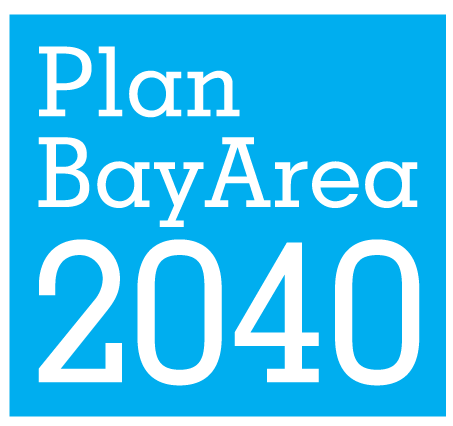

Welcome to the performance portal for Plan Bay Area 2040. This website allows stakeholders to access online resources associated with the project performance assessment and the state of good repair performance assessment. By clicking the links above, you will be able to explore:
- Project Dashboard. This resource allows stakeholders to view the draft performance result summary table, explore an interactive bubble chart, and see detailed data on any project of interest (quantified benefits, target score, confidence results, equity results).
- Equity Interactive Map. This interactive tool allows stakeholders to explore all of the uncommitted transportation investments analyzed on a geographic basis, with projects providing access to Communities of Concern clearly identified.
- Reference Documentation. This page stores key files associated with the Plan Bay Area 2040 performance assessment, including methodology documentation.
Note that results shown all preliminary drafts at this time; performance results are slated to be finalized by May 2016.
For more information:
Contact Kristen Carnarius for questions about the project performance assessment.
Contact Dave Vautin for questions about the state of good repair performance assessment.